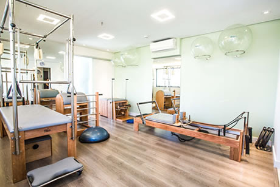

Nosso Espaço
Tudo preparado com o maior amor para te receber.



Bruna e Euler são os sócios da clínica Everest, cuja missão é promover movimento de qualidade por meio da fisioterapia e do pilates. A clínica oferece um atendimento especializado em um ambiente confortável e acolhedor, visando proporcionar uma vida mais ativa e satisfatória aos seus pacientes.
Com especialização na área esportiva, a clínica oferece uma ampla gama de serviços, incluindo pilates, fisioterapia esportiva (reabilitação pós-lesão, avaliações de corrida, beach tênis e CrossFit), além de fisioterapia para alívio da dor e nutrição esportiva.
Convidamos você a conhecer nossa clínica, experimentar nossas aulas e aproveitar todos os nossos benefícios. Estamos prontos para ajudar você a construir uma vida mais saudável,equilibrada e feliz.
Formação: Fisioterapia
CREFITO: 12345
Formação: Nutriçao
CRN: 67890
Tudo preparado com o maior amor para te receber.
O Pilates é um método de exercício físico desenvolvido por Joseph Pilates no início do século XX. Focado na melhora da flexibilidade, força, equilíbrio e controle corporal, o Pilates combina exercícios que envolvem a mente e o corpo, resultando em uma prática que beneficia tanto o condicionamento físico quanto o bem-estar mental.
Melhora da Flexibilidade: Os movimentos controlados do Pilates ajudam a alongar os
músculos, promovendo maior flexibilidade e amplitude de movimento nas articulações.
Fortalecimento Muscular: O Pilates trabalha diversos grupos musculares
simultaneamente, com ênfase no
fortalecimento do core, que inclui os músculos abdominais, lombares, glúteos e da região pélvica.
Postura e Alinhamento Corporal: Ao focar no fortalecimento do core e no controle
muscular, o Pilates ajuda a corrigir problemas posturais, melhorando o alinhamento do corpo e prevenindo
dores associadas à má postura.
Aprimoramento da Respiração: A respiração controlada é um dos princípios básicos do
Pilates, o que melhora a capacidade respiratória e promove um maior controle do corpo durante os
exercícios.
Redução do Estresse: O Pilates também tem efeitos positivos sobre o sistema nervoso,
ajudando a reduzir os níveis de estresse e ansiedade, além de promover uma sensação de relaxamento e
bem-estar.
Prevenção de Lesões: Por ser uma prática de baixo impacto, o Pilates é ideal para a
reabilitação física e para a prevenção de lesões, especialmente em pessoas que sofrem de dores crônicas
ou que estão se recuperando de lesões.


A fisioterapia é uma área da saúde focada na prevenção, diagnóstico, tratamento e reabilitação de condições físicas que afetam o movimento e a funcionalidade do corpo. Por meio de técnicas manuais, exercícios terapêuticos e o uso de equipamentos específicos, a fisioterapia visa melhorar a qualidade de vida dos pacientes, restaurando e promovendo a mobilidade, a força e o bem-estar geral.
Alívio da Dor:A fisioterapia é amplamente reconhecida por sua eficácia no alívio de
dores musculares, articulares e neuropáticas. Técnicas como massoterapia, eletroterapia e exercícios
específicos ajudam a reduzir a dor e a inflamação, proporcionando alívio imediato e a longo prazo.
Reabilitação Pós-Cirúrgica: Após cirurgias ortopédicas, como as de joelho, quadril ou
coluna, a fisioterapia desempenha um papel crucial na recuperação. Ela ajuda a restaurar a mobilidade,
fortalecer os músculos e acelerar o processo de cicatrização.
Prevenção de Lesões: A fisioterapia não é apenas reativa, mas também preventiva. Ao
identificar desequilíbrios musculares e fraquezas, o fisioterapeuta pode desenvolver programas de
exercícios personalizados que ajudam a prevenir lesões, especialmente em atletas e pessoas com estilos
de vida ativos.
Melhora da Mobilidade e Flexibilidade: Para pessoas que enfrentam dificuldades de
movimento devido a idade, lesões ou condições crônicas, a fisioterapia pode ajudar a restaurar a
flexibilidade e a mobilidade, melhorando a capacidade de realizar atividades cotidianas com mais
facilidade.
Reeducação Postural:: Problemas posturais podem levar a dores crônicas e outros
problemas de saúde. A fisioterapia auxilia na correção da postura, fortalecendo os músculos necessários
para manter o alinhamento corporal correto, reduzindo o risco de dores e lesões futuras.
Gerenciamento de Condições Crônicas: Para quem vive com condições crônicas, como
artrite, esclerose múltipla ou DPOC (doença pulmonar obstrutiva crônica), a fisioterapia oferece
estratégias para manejar os sintomas, melhorar a qualidade de vida e aumentar a independência.


A nutrição é fundamental para a manutenção da saúde e bem-estar. Uma alimentação equilibrada fornece os nutrientes necessários para o bom funcionamento do corpo, incluindo vitaminas, minerais, proteínas, carboidratos e gorduras saudáveis.
Fortalecimento do sistema imunológico:Uma alimentação rica em nutrientes, como vitaminas e minerais, ajuda o corpo a combater infecções e doenças, mantendo o sistema imunológico forte.
Melhoria da digestão: Consumir uma variedade de alimentos ricos em fibras, como frutas, vegetais e grãos integrais, promove a saúde digestiva, prevenindo problemas como constipação e promovendo a absorção eficiente de nutrientes.
Controle do peso corporal: Uma dieta equilibrada, rica em alimentos nutritivos e com quantidades adequadas de calorias, ajuda a manter um peso saudável, prevenindo tanto o ganho excessivo quanto a perda indesejada de peso.
Redução do risco de doenças crônicas: Alimentar-se bem pode diminuir o risco de desenvolver doenças crônicas, como diabetes tipo 2, hipertensão e doenças cardíacas, ao manter níveis saudáveis de colesterol, açúcar no sangue e pressão arterial.
Aumento dos níveis de energia: Consumir alimentos ricos em nutrientes e equilibrados em carboidratos, proteínas e gorduras saudáveis fornece ao corpo a energia necessária para realizar as atividades diárias com mais disposição e vigor.


 Agende sua Aula!
Agende sua Aula!